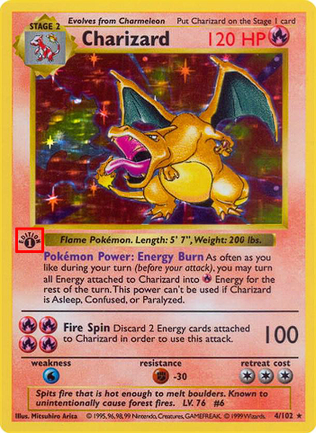

Pokemon Card Guide
Welcome
I’m putting this guide together because I genuinely love collecting Pokémon as a hobby. Like a lot of people, I dug out my old collection one day and realized I had no idea what anything was worth anymore. The sets had changed, the market had changed, and I felt completely lost trying to figure out where to even start.
If you’re here, you might be in a similar spot: maybe you just found a childhood binder, bought a collection, or started ripping packs again and now you’re wondering what you actually have. It can be overwhelming to sort through piles of cards, strange set symbols, and a million different price websites.
My goal with this guide is to make that process a lot less confusing. I want to help new or returning collectors learn how to:
- Identify what card you’re looking at (set, number, rarity, etc.).
- Use price tools confidently to estimate value.
- Decide when grading makes sense and what companies look for.
- Track your collection so you actually know what you have.
By the time you work through these sections, my hope is that you’ll feel confident looking at a card and saying, “I know what this is, I know roughly what it’s worth, and I know what to do with it next.”
How do I identify my card?
Card name
- The most obvious identifier is the name, but there are hundreds of "Pikachu" cards, so this likely won't be enough on its own.
- The language is also an important factor. Pokemon cards are printed in many languages including English, Japanese, Chinese, Korean, and more.
Card number
- Located at the bottom of the card, this identifies which card it is within the given set. e.g. 175/203.
- The first number is the card number that identifies that card. The second number is the number of cards in the base set list. There are multiple cards in a set that come after the base set list, so you will likely come across something like 203/193.
Set symbol
- Every era up to and including Sword and Shield have symbols that represent the specific set the card is from. For Wizards of the Coast (WOTC) sets, the symbol is located at the bottom right of the portrait. Post WOTC, the set symbol was moved to the bottom of the card.
- Scarlet and Violet and Mega Evolution eras use a three letter abbreviation that represents the set it's from. They are located in the bottom left corner of the cards.
- Each era also has "Black Star Promo" cards that are marked by a black star with the word "promo" in it in the bottom left corner next to the card number.
- This is an excellent reference page when searching by symbol or abbreviation.
Rarity
-
The rarity of a card can be found by a symbol or shape at the bottom of the card. A few common rarities include:
- Circle - Common
- Diamond - Uncommon
- Black Star - Rare (no "Promo" text)
- Two Black Stars - Double Rare
- Two White Stars - Ultra Rare
- Gold Star - Illustration Rare (IR)
- Two Gold Stars - Special Illustration Rare (SIR)
- These are two excellent reference guides on rarity symbols:
Vintage print runs
Early print runs of classic sets can come in several flavors. Knowing whether a card is 1st edition, shadowless, or unlimited helps you identify scarcity and value.
1st edition
First edition cards are identified by an "Edition 1" stamp located in the left-center of the card, just below the bottom left corner of the portrait:

- All 1st edition cards are shadowless, with the exception of a specific Machamp that was only available as part of the two-player starter deck.
- Most relevant to early Wizards of the Coast (WOTC) sets; later sets generally stopped using 1st edition stamps.
Shadowless
Early unlimited print run of Base Set (after 1st edition) with no drop shadow on the right and bottom edges of the art box. Print details and colors also differ slightly (lighter yellow borders, thinner HP font).
- No shadow next to the art box; later unlimited cards add a gray shadow.
- Typically more valuable than standard unlimited but below 1st edition.
- Only applies to early Base Set prints; other sets do not have a shadowless variant.
Unlimited
Standard mass-market print run. For Base Set, unlimited cards have the gray shadow around the art box and no 1st edition stamp. These are the most common and generally the most affordable version of vintage prints.
- Has the shadow around the portrait box (unlike shadowless).
- No Edition 1 stamp.
- Commonly what you see in bulk collections and most marketplace listings.
Quick identification tips
- Check the stamp first: Edition 1 stamp present = 1st edition (unless it's Machamp); absent = either shadowless or unlimited.
- Look for the shadow: No shadow along the right of the art box = shadowless; shadow present = unlimited.
- Border/color cues: Shadowless cards have a lighter yellow border and thinner HP text than unlimited.
- Apply only where it matters: Shadowless exists only for early Base Set prints. Later sets are typically just 1st edition vs. unlimited (or only unlimited).
Condition
The condition of a card is an important factor when determining the value of a card. A card in "NM" (Near Mint) condition is generally worth far more than one in "Damaged" condition. The list of recognized conditions are as follows:
Common condition grades
- NM - Near Mint
- LP - Lightly Played
- MP - Moderately Played
- HP - Heavily Played
- Damaged - Speaks for itself, the card is damaged.
This is the standard guide used to determine what each condition means.
How to check your card
Quick self-check
- Use good lighting and tilt the card to see surface flaws.
- Inspect edges, corners, and front/back surface.
- Optional helpers: sleeve, microfiber cloth, loupe.
Common issues
- Whitening - Tiny white spots on edges/corners where ink has worn off. Light specks usually put a card in LP; heavy whitening drops it further.
- Scratches - Surface lines on the front/back (look under angled light). Minor print lines may still fit LP; deep or numerous scratches push it to MP/HP.
- Creases - Any crease is considered damage and usually drops a card to HP or worse, even if it only shows at an angle. Deep creases with color break can be treated as Damaged regardless of the rest of the card.
- Bends - A gentle curve/warp by itself doesn't change condition and can often be flattened by sleeving the card and pressing it in a heavy book or binder pages for a few days. Avoid heat/steam. If the bend leaves a visible line or you can feel it, that's a crease and should be graded as HP/Damaged.
- Other defects - Water damage, tearing, peeling, stains, or writing will also reduce condition.
Card care and storage
Properly storing your cards will help preserve their condition, which is vital to retaining value, collectibility, and longevity.
Penny sleeves
The most important aspect of card storage for anything of even minor value, is to PUT IT IN A PENNY SLEEVE. You don't need to sleeve your bulk or energy cards (you're totally allowed to if you want though), but for any card you even remotely care about preserving the condition of, I say again, PUT IT IN A PENNY SLEEVE!
Penny sleeves are your first line of defense. They help prevent scratches from normal handling and shuffling, dust, dirt, oils, etc.
Material
- Polypropylene, not PVC material
- Acid-free
- No softeners / plasticizers
Size
- 2.5" x 3.5"
- 0.05 - 0.09mm thickness is fine. Thicker sleeves are considered more "premium" and provide slightly better protection. The thinner it gets, the more likely it gives way to potential damage.
- The card should fit in the penny sleeve snugly enough that it doesn't slide around easily, but loose enough that it is relatively easy to slide in and out of the sleeve.
Common brands
Top Loaders
Top loaders are hard plastic sleeves that provide a second layer of protection for the more important cards in your collection.
The most important thing about top loaders is that you NEVER put your card in one WITHOUT A PENNY SLEEVE. Penny sleeve first, then insert the card, with it in the penny sleeve, inside the top loader.
Material
- Polypropylene / non-PVC is the preferred material
- PVC is not ideal, but okay here since the card should NEVER be in one without a penny sleeve, and the penny sleeve will do a decent job at protecting it.
Size
- 3" x 4"
-
35pt top loaders are the standard, preferred size.
- It fits one card (there's space and flexibility to put more than that, but...don't).
Common brands
Team Bags
Team bags are resealable outer sleeves that fit over a toploader or card saver, adding a final barrier against dust, moisture, and scuffs during storage or shipping.
They are inexpensive, easy to remove, and great for keeping a protected card from sliding out of its holder.
Graded Card Protection
Once a card is graded, the slab becomes the main layer of protection. At that point, the goal is less about protecting the card itself from handling and more about keeping the case clean, scratch-free, and safely stored.
There's also some options to spice up the look of the slab a bit to make it pop even more! Below we'll review some of the options.
Slab sleeves
- Use a slab sleeve / slab bag if you want to prevent scratches, dust, and fingerprints on the case.
- A team bag can work in some cases, but a slab-specific sleeve is usually a better fit.
Simple slab protection picks
Affiliate links, no extra cost to you.
Graded Guard
- Graded Guard makes silicone bumpers that wrap around the outside edge of a slab to help reduce scuffs and minor impact damage. They also have a large variety of colors and designs to fit the art style of the card inside.
Carddictive
- Carddictive makes premium storage products for graded cards, including slab cases and storage options sized for PSA, CGC, and BGS slabs. They look absolutely fantastic, and provide additional protection to the slab as it fully encloses it within a UV protected case. They have various color options as well so you can customize your display exactly the way you like it!
Dragonscale Supplies
- Dragonscale Supplies focuses heavily on graded-card accessories, including slab guards, slab sleeves, acrylic display pieces, and slab vaults. If you want matching protection plus display/storage options for PSA, CGC, or BGS slabs, they have a lot of variety.
Binders
Material
- Polypropylene
- Acid-free
- PVC-free / non-PVC
What to look for
-
Side-loaded
- Side-loaded binders are generally the preferred binder to organize/store cards.
- The side-loaded aspect helps prevent cards from falling out of their pockets if the binder is dropped, flipped, or jostled.
-
Zipped
- Keeps dust out.
- Prevents cards from falling out of binder if they happen to slip out of their pockets.
- Correct materials
Alternatives
-
Top loader
- Top loader binders have large pockets to fit an entire Top Loader in it.
- These are generally used for really high-value collections.
- They get very large and very heavy very quickly.
- While they have their place, they are not generally the preferred binder type for collectors due to their size.
Avoid
-
3-ring / D-ring
- These can (and likely will) damage cards next to the ring over time. They put pressure on the side of the card, causing dents, creases, or even tearing.
- Strongly recommend NOT using these types of binders.
- If you absolutely must use this type, go with D-ring and not 3-ring, as they're less likely to cause damage. Make sure all the pages sit properly when closing/storing the binder to help reduce the risk of damage to your cards.
Summary
- Use side-loading, PVC-free pages; avoid front-loaders that can dump cards if flipped.
- Zip binders keep dust out; don’t overfill pages so pockets stay flat.
- Pick a binder with pages that are sewn or welded into the spine so no metal rings can dent the cards.
Environment
- Store cool, dry, and dark: target ~40-60% humidity and stable room temperature.
- Avoid direct sunlight and UV exposure.
- Keep cards off the floor to avoid dust, dirt, and moisture.
- Add silica gel packs to boxes/binders in humid areas; replace them periodically.
Quick checklist
- Sleeve valuable cards immediately; add top loaders for shipping or higher-end items.
- Keep binders zipped and pages flat; don’t overstuff pockets.
- Store in a cool, dry, dark place away from sunlight and floor moisture.
- Handle by edges with clean hands; keep drinks and food away from your workspace.
What's my card worth?
Card values depend on which card it is, condition, and market demand.
Where to look up value
TCGPlayer
TCGPlayer is considered the gold standard for market value of raw (ungraded) cards. It allows you to search by card name, card number, rarity, set, condition, or any other identifying aspect of your card. There's a ton of filters to narrow your search to help find the exact card you're looking for or just to browse.
Example: "Pikachu+#025"
Note: Once you find your card, it's important to look at the Market Price of the card and not what it shows the listings start at.
eBay
On eBay, always filter to Sold items. Use search terms like pokemon [name] [set] [number] and add "PSA 10" or "raw" if needed.
Example: "Pikachu 25/165"
PriceCharting
PriceCharting tracks average sale prices over time. It's great for a quick ballpark number, but still cross-check with recent sales on eBay or TCGPlayer for accuracy.
Collectr
Collectr is a collection tracking app that we'll cover later, but is another great source for looking up quick ballpark values, however much like PriceCharting you should still check recent sales on eBay and/or TCGPlayer before selling or buying.
Tracking your Collection
Tracking your collection helps you avoid duplicate purchases, estimate total value, and plan trades or sales.
Collectr
- Platforms
- Web
- Android
- iOS
- Features: portfolio-style view of your collection, real-time price data, powerful filters and sorting, card scanning with your phone's camera, multiple portfolios, exports and widgets (with the Pro tier).
- What it tracks: raw cards, graded cards, and sealed products across many TCGs (like Pokemon, Magic: The Gathering, Yu-Gi-Oh!, and more).
- Summary: Collectr is a web, iOS, and Android app for tracking TCG collections. It lets you organize portfolios, estimate the value of individual cards and sealed products, monitor your collection's total value, and quickly compare trade offers - making it a popular choice among modern Pokemon collectors.
PriceCharting
- Platforms
- Web
- Android
- iOS
- Features: free collection tracker with automatic price updates, historic value charts for your collection, barcode/photo scanning, text import, and options to share your collection.
- What it tracks: video games, Pokemon and other TCG cards, comics, coins, sports cards, Funko Pops, and more.
- Summary: PriceCharting is a web, iOS, and Android price guide and collection tracker. It aggregates recent sales data to estimate market values for raw and graded cards and sealed products, and lets you log your collection to see its total value over time. The interface is more utilitarian than Collectr, but once you're used to it, it's a solid option for price checking and basic tracking.
Card-Codex
- Platforms
- Web
- Features: online collection manager with price display, collection and wishlist management, and master set tracking capabilities.
-
What it tracks:
- Raw cards
- Graded cards
- Sealed products
- Master Set progress
- Market prices
- Summary: Card-Codex is a Pokemon-focused collection platform that goes beyond basic logging. It supports raw cards, graded cards (pro only), and sealed products while tracking market prices, and it adds collection tools like master set progress (including variants), a searchable Pokedex with generation filters and animated renders, an Insights feed with articles and interviews, and a Leaderboard to compare top collections across the community. It's a fantastic tool to track everything in your collection, understand and monitor the value of it, and the team is updating it with new features all the time.
-
Pro: There is a pro version that unlocks even more features, including:
- Graded Cards
- Unlocks all currencies
- Increased collection size limits
- And much, much more...
- More information on what comes with their Pro subscription can be found here.
- Join their Discord to keep up with new and upcoming features!
Remember - the prices in these apps are ballpark and, as described in the What's my card worth section, eBay and/or TCGPlayer should be used for the most accurate pricing information.
Grading
Grading is when you send a card to a company to be evaluated, numbered, and sealed in a plastic case (referred to as a "slab").
The sections below explain why people grade cards, when it makes sense, what companies look for, and some of the major grading companies you'll hear about.
Why people grade cards
People grade cards to:
- Protect high-value or sentimental cards
- Get a professional opinion on condition
- Make buying/selling easier with a recognized grade
Grading costs time and money, so it's important to be selective about what you send.
Should I grade?
Not every card is worth grading. Think about both value and personal attachment.
What companies look for
- Centering (borders on all sides)
- Corners (whitening, bends, dings)
- Edges (chipping and nicks)
- Surface (scratches, print lines, dents, stains)
How to assess at home
- Use strong lighting and tilt the card to see scratches and print lines.
- Check the back for whitening and edge wear. You can use a black light to really make whitening stand out.
- Compare your card to photos of graded copies online to get a rough idea of where it stands.
Grading companies
PSA
Summary
Professional Sports Authenticator (PSA) was founded in 1991 and is the biggest third-party card grading company in the hobby today. It started with sports cards but quickly became the default choice for Pokemon and other TCGs, and PSA slabs usually make up the majority of graded sales data. In practice, PSA prices tend to set the "language" of the market - a PSA 10 is often treated as the reference point for what a card can be worth, and many people refer to PSA as the hobby's "gold standard."
Grading Standards
PSA uses a 1-10 scale with whole-number grades (plus a few half-grades like 1.5 or 8.5). PSA 10 "Gem Mint" is a virtually perfect card with tight centering tolerances and no obvious flaws. They're generally a little more forgiving than CGC or BGS, but still hold a high standard for a 10.
See PSA Standards
Value after grading
For most Pokemon cards, PSA 10s usually sell for more than the same card in a CGC 10 or BGS 9.5, simply because more buyers are hunting PSA slabs and that's what many people search for first. If your main goal is resale value or liquidity, PSA is usually the safest choice. Downsides: fees can be higher at times, turnaround can slow when they're busy, and you don't get subgrades or ultra-detailed label info (unless you pay a lot extra, which seems to be PSA's motto).
Cost to Grade
For a typical low-to-mid value Pokemon card, PSA's cheaper "value" tiers usually land around the low- to mid-$20s per card in grading fees, with higher tiers costing more. Once you add round-trip shipping and insurance, grading one card by itself often ends up somewhere in the ballpark of $45-$60 all-in. If it's a particularly high-value card, expect it to cost significantly more, as they will upcharge if you submit in the wrong tier and if the resulting grade increases the value to another tier. Note that they will not downgrade tiers if they give it a lower grade that actually devalues the card. Submitting multiple cards or using a group submitter can bring the per-card cost down quite a bit.
For the most up-to-date fees and service levels, see PSA's official submission pricing page.
BGS
Summary
Beckett Grading Services (BGS) launched in 1999 as the grading arm of Beckett, the company behind the classic price guides. It's one of the longest-running PSA competitors and is especially popular with high-end collectors who like detailed grading information on the label.
Grading Standards
BGS uses a 1-10 scale with half-point steps and four subgrades on the label: centering, corners, edges and surface. A 9.5 is their standard "Gem Mint" grade, a 10 is "Pristine," and a Black Label 10 means all four subgrades are 10s. Black Labels are extremely rare and BGS is much stricter than PSA at the very top of the grading scale.
See BGS Standards
Value after grading
In general, PSA 10s tend to outsell BGS 9.5s. However, BGS Pristine 10s commonly sell for more than a PSA 10 because of how hard they are to get. A BGS 10 is usually tougher to achieve than a PSA 10, which is why it often commands a premium on top-tier cards. If you manage to achieve a Black Label 10, you've basically won the lottery. Just a quick check on a Japanese Mew 151 sv2a 205/165 - a PSA 10 sold for $390.00, and a BGS Black Label 10 sold for $8,100.00. BGS is a great option if you care about subgrades and chasing ultra-premium grades, but demand is lower than PSA for everyday cards.
Cost to Grade
BGS has multiple tiers. Their cheaper options for modern, lower-value cards often fall around the mid-teens to mid-$30s per card depending on whether you want subgrades and how fast you want it back. By the time you add insured shipping both ways, grading a single card commonly ends up closer to roughly $45-$70 all-in, with the higher end being faster tiers or single-card submissions.
You can see current options and prices on Beckett's official card grading service page.
CGC
Summary
Certified Guaranty Company (CGC) has been grading comics since 2000, and launched its dedicated CGC Trading Cards division for Pokemon and Magic in 2020. In 2023 it merged its TCG and sports divisions into "CGC Cards," which is now one of the largest card graders in the world. In Pokemon, CGC usually sits right behind PSA alongside BGS in terms of popularity.
Grading Standards
CGC uses a 1-10 scale with half-grades. Their current system has a Gem Mint 10 and an even tougher "Pristine 10" tier. CGC built a reputation for being strict, especially on surface scratches and print lines, so a CGC 10 is often viewed as harder to achieve than a PSA 10. Subgrades used to be printed on the label more commonly; even without them, CGC is known for very tight standards. Where CGC really stands out is error and misprint cards: they formally recognize many different kinds of errors and clearly note them on the label, and they don't treat error submissions as an afterthought. Because of that, many collectors consider CGC the king for error cards and misprints.
See CGC Standards
Value after grading
For standard cards, CGC 10s usually sell for a bit less than PSA 10s, which can make them a good value play if you want strong grades without paying the absolute PSA premium. CGC Pristine 10's will generally outperform PSA 10s and land somewhere around the same level as BGS 10s.
Cost to Grade
CGC's lower tiers for modern cards are usually in the mid-teens to high-teens (USD) per card, with faster or higher-value tiers costing more. If you're sending just one card, it's reasonable to expect something like $30-$45 total once you include round-trip shipping and insurance. Larger submissions spread out the shipping cost and can bring the per-card total closer to the low-$20s.
For exact current rates and tier details, check CGC's official submission form.
TAG
Summary
TAG (Technical Authentication & Grading) spent about a decade developing an automated, technology-driven grading system before opening to the public in the early 2020s. It's still a relatively small slice of the market compared to PSA/CGC/BGS, but has grown quickly and built a strong reputation among collectors who care about data and consistency.
Grading Standards
Every TAG slab shows a familiar 1-10 grade, but behind the scenes they use a 100-1000 "TAG Score" that maps to that grade and lets you see how strong a particular 9 or 10 really is. Cards are scanned with high-resolution imaging and software that measures centering and identifies defects. You also get a digital grading report with precise centering numbers, a breakdown of "dings" (notable defects), and pop/leaderboard info. That process tends to make TAG quite tough on tiny imperfections that humans might otherwise miss.
See TAG Standards
Value after grading
Because TAG is newer, resale prices are usually a bit below PSA for the same grade, but often competitive with or slightly above some other alternatives in modern TCGs, especially when buyers care about the detailed reports. Their strengths are fast turnarounds, very transparent grading, and slick, modern-looking slabs with a lot of data behind the grade.
Cost to Grade
TAG offers different services, but for most collectors the common grading options live in roughly the $20-$30 per-card range for standard speed, with faster "priority" style tiers costing more. Since many TAG tiers include some built-in insurance coverage, your extra cost is mostly shipping. For a single card, a rough all-in estimate in the US might be around $40-$60 total; sending a stack at once brings the per-card total down.
You can see their current tier breakdown on TAG's official pricing page.
ACE (UK)
Summary
ACE Grading is a UK-based grading company that launched in the early 2020s and focuses heavily on the Pokemon market. It's one of the most visible local options in the UK, with crystal-clear slabs and stylish, artwork-focused labels that are popular with collectors who want their cards to look great on display.
Grading Standards
ACE uses a familiar numeric grading scale with 1-10 style grades and named tiers such as Mint and Gem Mint, so it lines up conceptually with PSA/BGS/CGC. Community experience generally puts their strictness somewhere in the middle of the pack - solid and consistent, but not quite as punishing at the very top end as CGC's toughest 10s. Their custom "Ace Labels," which extend or complement the card's art on the label, are a major selling point.
See ACE Standards
Value after grading
Outside the UK, ACE-graded cards usually sell for less than equivalent PSA, CGC or BGS grades, mostly because the brand is still regional and has a smaller buyer base. Within the UK, ACE has strong visibility on local marketplaces and streams, so it's a nice option if you want attractive slabs for a personal collection and you're not chasing the absolute top resale value. If your priority is worldwide demand and maximum price, PSA (and high-end BGS/CGC) remains the safer play.
Cost to Grade
ACE's own grading tiers in the UK typically run somewhere in the low-teens to high-teens (GBP) per card, depending on how fast you want your order back. After adding insured shipping both ways inside the UK, grading a single card might land somewhere around GBP 20-30 all-in. Submitting several cards together spreads the shipping cost and brings that per-card total down.
For the latest ACE pricing and turnaround options, see ACE's official submission portal.
Errors?!
Error cards are Pokémon cards with printing or production mistakes that create unusual variants collectors chase. This section is a work in progress with more to come, but for now visit r/PokemonMisprints for more information.
Shipping
The most important part about shipping a card is protecting the card itself. This can be tricky if you need to ship a lot of cards at once, and there's some debate on the correct way to ship a lot of cards at once. Because of this we'll only go over shipping one card at a time, and you can play with the best practices for larger shipments. Use your best judgement and always remember preserving the card is more important than the material required to ship it, as ultimately if the card gets damaged in the process you'll be out the materials AND the cost of the card.
Supplies
This is a list of supplies you may need when shipping a card:
Required
- Penny Sleeve
- Top Loader OR Card Saver
- Painter's Tape and/or Packing Tape (not scotch tape)
Optional
- Team Bag
One of the following
- Plain white envelope
- Bubble Mailer + Bubble Wrap
- Box + Bubble Wrap
Raw Cards
- Card goes in penny sleeve
- Card and penny sleeve go into either top loader (recommended) or a card saver (still a good option)
- Place a small piece of painter's tape over the opening of the top loader or card saver to prevent the card from sliding out during shipping. Do not use scotch tape! It's a nightmare to get off of a top loader and will enrage even the calmest of collectors.
- If you use a top loader, it's common to pair it with a Team Bag instead of the painter's tape. It looks much cleaner and more professional, and adds an extra layer to help keep dust and other contaminents out.
- If you really wanted to, you can ship it in a bubble mailer or a box. Just make sure the card is secure within the package - you don't want it banging around on the way to its destination.
- If you really wanted to, some companies make little cardboard sleeves for shipping cards in that you could use instead of a top loader or card saver. They don't cost much, but generally more than a top loader so why bother.
Graded Cards
- It's generally a good idea to put the slab in a team bag / slab bag to prevent it from getting dirty or scratched during shipping. It's not required, but a good practice. They're pretty cheap and the extra care is always appreciated from the customer's perspective.
- Wrap the slab in some bubble wrap, tape all around it (packing tape is a good option here)
- Stick it in either a bubble mailer or a box.
- Slap a label on it.
- The glue on some bubble mailers isn't the best or most reliable, so use packing tape across the top to ensure it doesn't come open or get tampered with.
- If using a box, packing tape the whole thing shut.
Contact
Thanks so much for reading the guide. If you spot any bugs, have a request, or want extra help with your collection, reach out anytime.
Email: matthew@poke-guide.com
Support this guide
Collecting Pokemon cards has been a huge source of joy and motivation for me - it's what keeps me digging into sets, learning the details, and sharing everything I've learned in guides like this.
If you've made it this far, thank you. I really appreciate you taking the time to read through this guide and hope you found it helpful. Feel free to share it with anyone who might benefit - friends, parents supporting their kids, or random people on Reddit or at a card show. Getting this guide out to the community means a lot.
Thanks again for reading through! Check back often for updates!
Affiliate links
These are the affiliate links used in this guide, collected in one place. A few of the most relevant product links are also surfaced in the related sections above so you do not have to hunt for them. If you use these links, thank you. It helps support the project at no extra cost to you.
-
TCGPlayer
- This is one of the best places to buy raw cards for any TCG. They have an enormous amount of cards available, an incredible number of vendors to choose from with ratings and statuses to give you confidence in your purchase. They also have a Cart Optimizer when you're buying multiple cards that will try to find the best price and lowest costs to save as much money as possible, as buying a single from multiple vendors can add up due to individual shipping costs.
-
eBay
- eBay is always a good option as well. It's well-known, has excellent support, and every listing comes with a photo so you can see what condition the card is in, or reach out to the seller to request more photos if it's unclear. It has 30 day buyer protection, and for high value cards even an Authenticity Guarantee where the card is first shipped to a third party company to verify the legitimacy of it before it is sent to you.
-
Misprint
- Misprint is a relatively new marketplace option for buying and selling cards. You can set a price that you want to buy a card at, and a seller can choose to fulfill that order. For selling, you can set a price you want someone to buy your card at and anyone can come along and buy it, or you can fulfill an existing purchase request.
- If you create a free account with this link, you'll receive $5 store credit.
-
Carddictive
- Use code PokeGuide at checkout to receive a 10% discount on your order!
-
Dragonscale Supplies
- Dragonscale makes graded-card accessories like slab guards, slab sleeves, display cases, and slab vaults. There is not an affiliate link for this one yet, so this is just a direct link to their site for now.
-
Amazon
- These are some recommended products if you're looking for something reliable and reasonably priced.
-
If you have trouble buying cards...
-
It's really hard to find anything at MSRP these days due to scalpers, bots, and just an insane amount of
interest in the hobby. If you want to get a leg-up on them, you can join one of these Discord servers that
provide notifications when restocks occur online and when new products are supposed to be releasing.
- Fastest: This Discord is a paid server ($10/month) but provides the fastest notifications of any of them out there. They put in a significant amount of effort in finding out what's coming up, when stock is loaded on the back end before drops occur, what products are releasing that day/week, and more. It does cost $10 per month, but it brings extraordinary value in actual picking up product at MSRP, so it pays for itself rather quickly if you've been buying at market price.
- Free: This Discord is completely free and provides very fast notifications on product releases. It was created by the Pokemon YouTuber RattlePokemon
- These are just two examples that have proven success rates, but they are not the only ones out there. Do some research, try a few free ones and find what works best for you!
-
It's really hard to find anything at MSRP these days due to scalpers, bots, and just an insane amount of
interest in the hobby. If you want to get a leg-up on them, you can join one of these Discord servers that
provide notifications when restocks occur online and when new products are supposed to be releasing.